En esta primera parte del estudio del sistema de Lorenz utilizamos los parámetros \(\sigma=10\), \(\rho=28\) y \(\beta=8/3\). Comenzamos con la condición inicial \((x_0,y_0,z_0)=(1,1,1)\) y observamos la evolución de las tres variables mediante sus gráficas en función del tiempo. Estas gráficas permiten apreciar que las variables presentan un comportamiento irregular, con cambios continuos en su amplitud y sin una repetición evidente a lo largo del intervalo de tiempo estudiado.
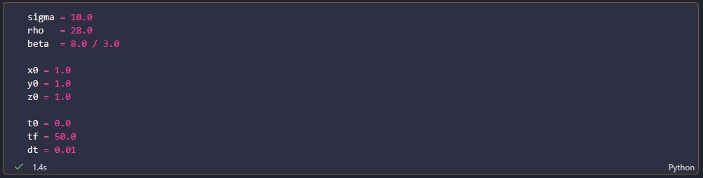
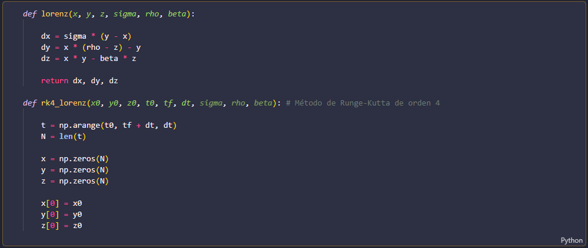
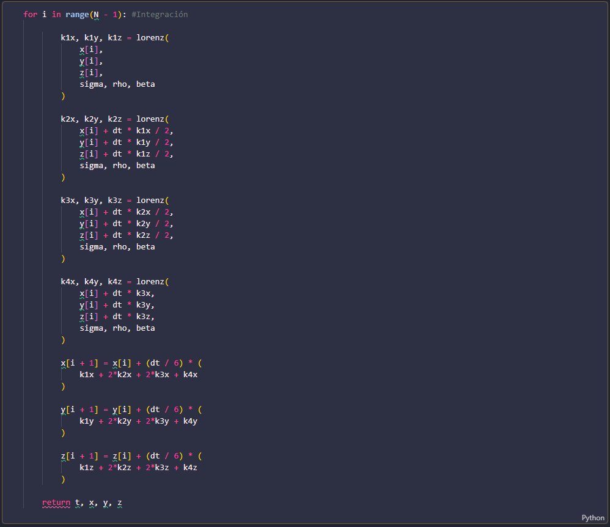
Para visualizar este comportamiento desde otra perspectiva, representamos la trayectoria del sistema mediante sus proyecciones en los planos \((x,y)\), \((x,z)\) y \((y,z)\), así como en el espacio tridimensional \((x,y,z)\). Estas representaciones permiten observar la estructura de la trayectoria y cómo las tres variables evolucionan de manera conjunta.
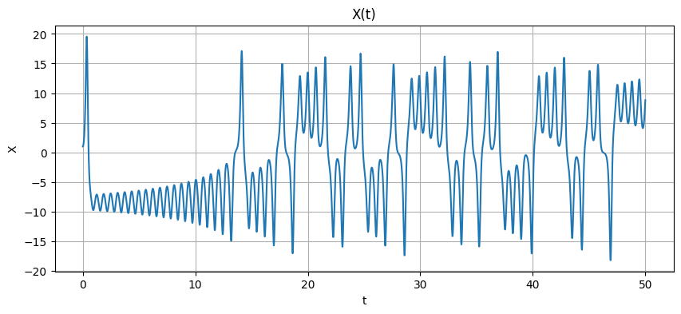
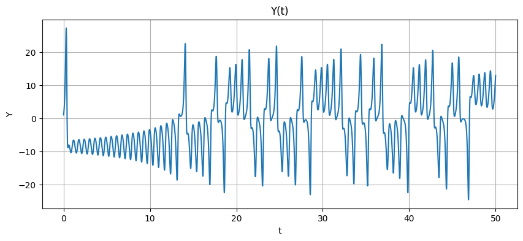
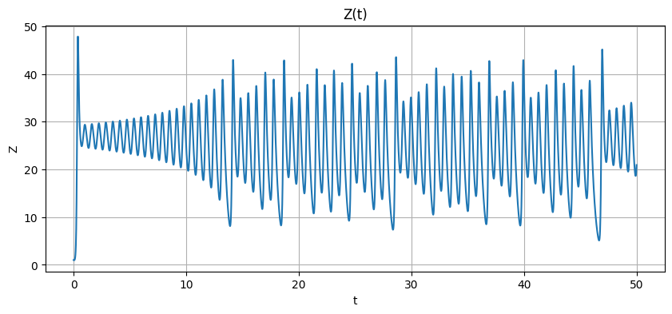
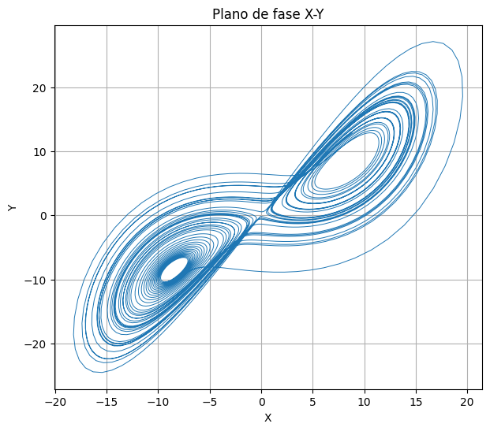
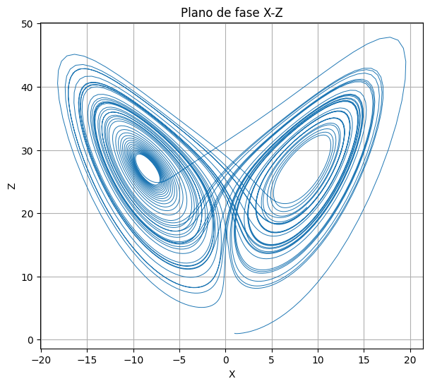
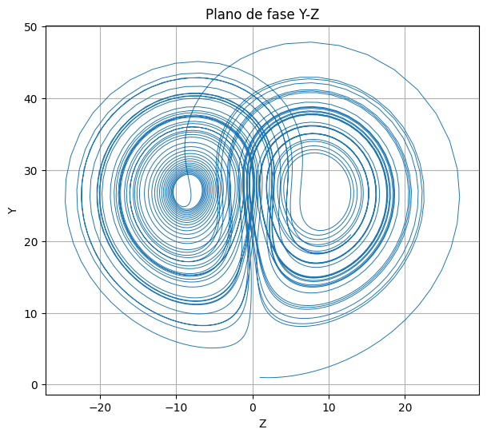
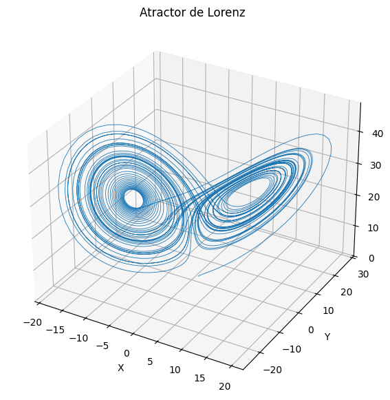
Sensibilidad a las condiciones iniciales
Para estudiar la sensibilidad del sistema de Lorenz a las condiciones iniciales, comparamos dos trayectorias que comienzan en puntos muy cercanos: \((x_0,y_0,z_0)=(1,1,1)\) y \((x_0,y_0,z_0)=(1.01,1,1)\). Los parámetros del sistema se mantienen iguales en ambas simulaciones, por lo que la única diferencia entre las trayectorias se encuentra en la condición inicial.

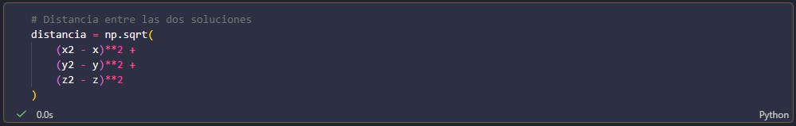
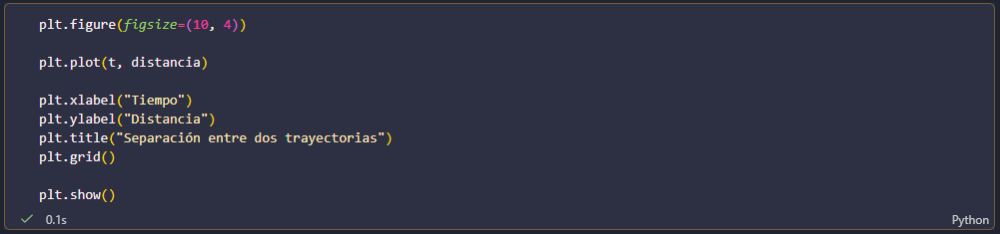
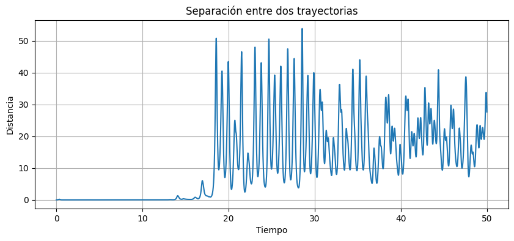
Al comienzo, las dos soluciones presentan un comportamiento prácticamente idéntico debido a la pequeña diferencia entre sus puntos de partida. Sin embargo, conforme avanza el tiempo, las trayectorias comienzan a separarse cada vez más. Para visualizar este fenómeno calculamos la distancia entre ambas soluciones en el espacio tridimensional y la representamos en función del tiempo. La separación inicial, aunque muy pequeña, puede crecer considerablemente debido a la dinámica caótica del sistema.
Este resultado muestra que en un sistema caótico una pequeña diferencia en las condiciones iniciales puede producir diferencias grandes después de cierto tiempo. Por esta razón, aunque el sistema esté completamente determinado por sus ecuaciones, pequeñas variaciones en el estado inicial dificultan predecir su comportamiento a largo plazo.
Comparación de trayectorias
Para observar con mayor claridad la sensibilidad del sistema a las condiciones iniciales, comparamos las trayectorias correspondientes a \((x_0,y_0,z_0)=(1,1,1)\) y \((x_0,y_0,z_0)=(1.01,1,1)\). Aunque la diferencia inicial entre ambos puntos es muy pequeña, las trayectorias comienzan a separarse conforme avanza el tiempo. Este comportamiento puede observarse tanto en las proyecciones sobre los planos \((x,y)\), \((x,z)\) y \((y,z)\) como en la representación tridimensional.
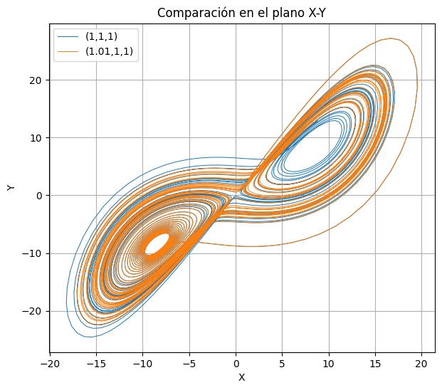
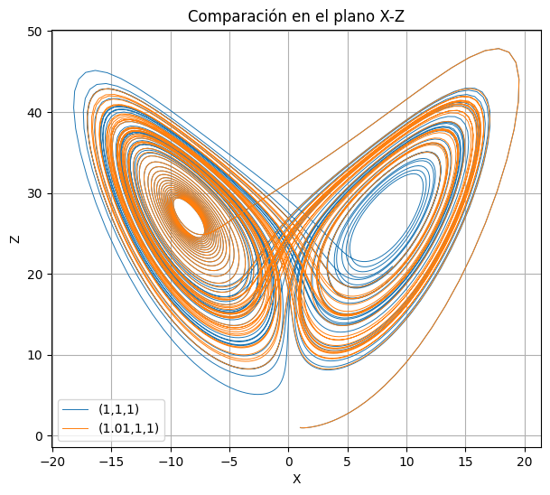
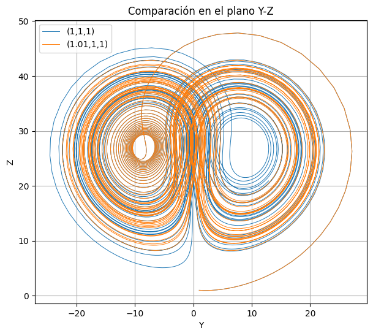
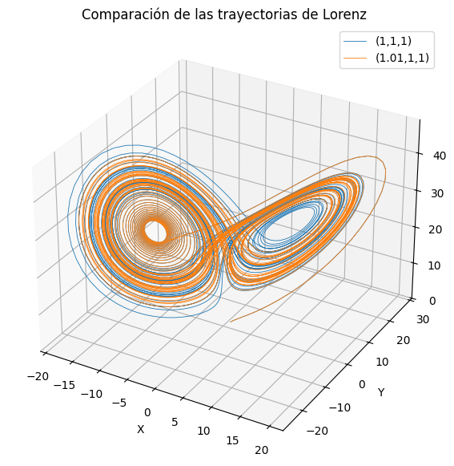
El sistema de Lorenz mostró un comportamiento notoriamente sensible: condiciones iniciales prácticamente iguales pueden producir trayectorias que se separan considerablemente con el paso del tiempo. Esto nos permitió observar una característica fundamental de los sistemas caóticos: aunque las ecuaciones sean deterministas, pequeñas diferencias en el estado inicial pueden dificultar la predicción del comportamiento a largo plazo.